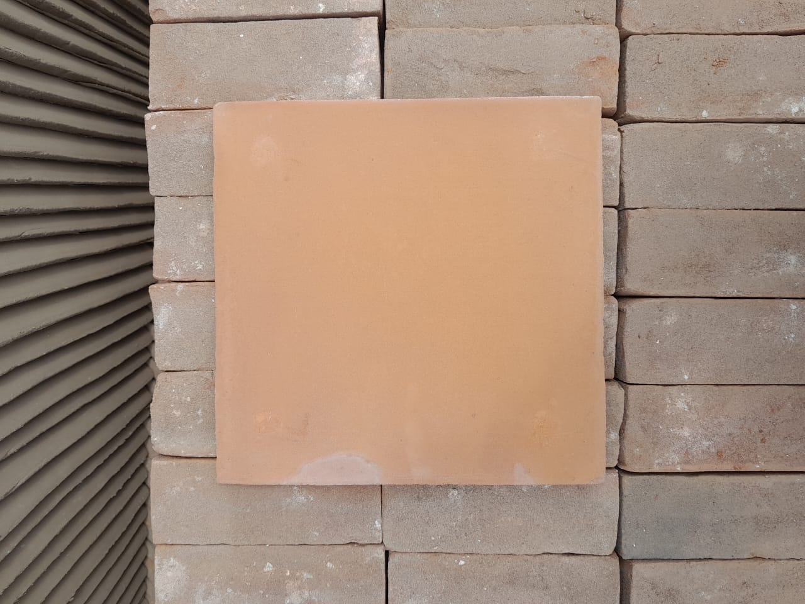
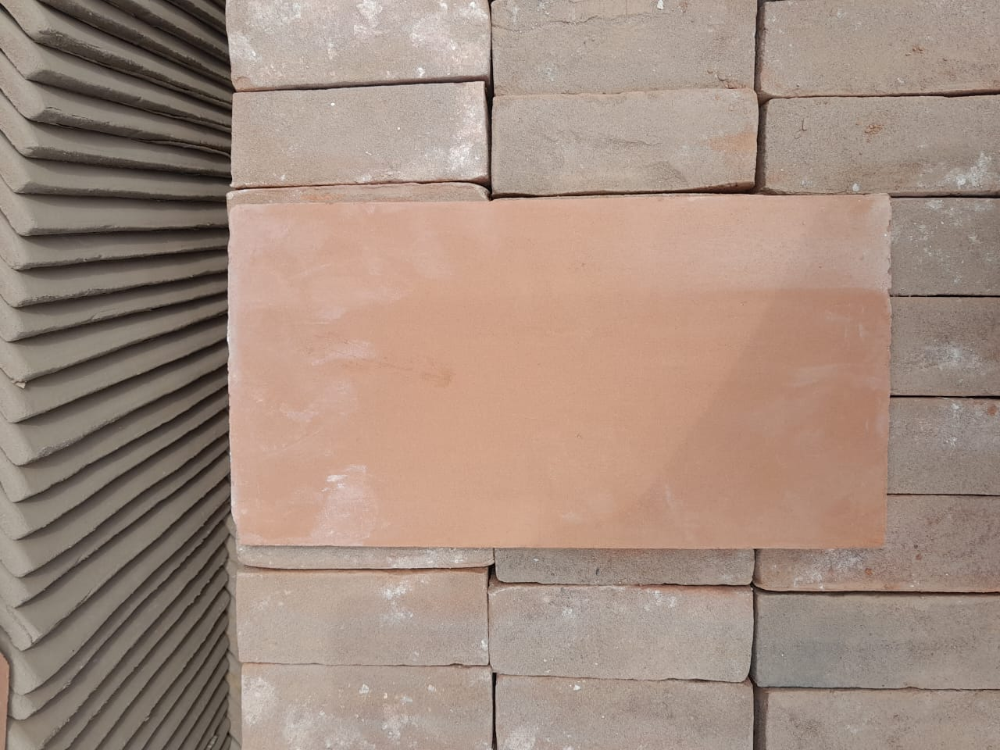
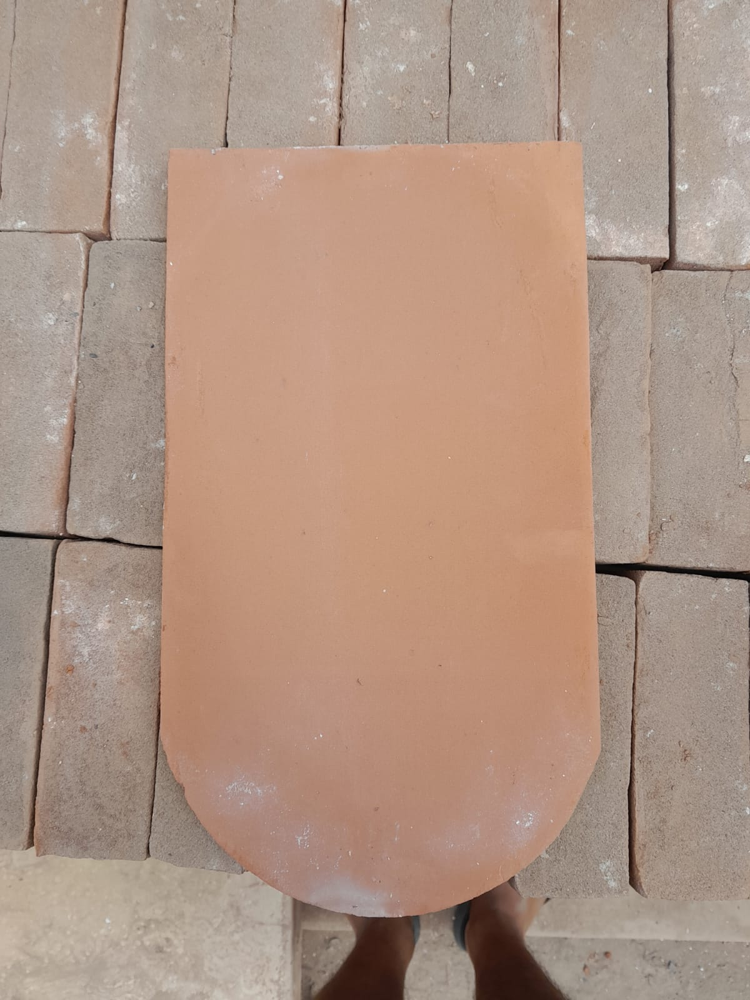
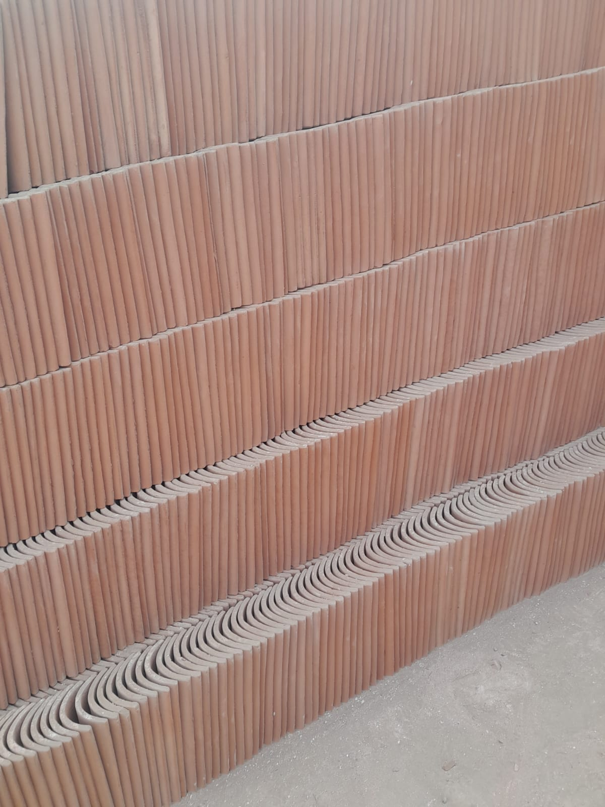

Nuestros Productos
Descubre nuestra amplia gama de tejas artesanales
Catálogo de Tejas

Pastelero Artesanal
Pastelero artesanal con patita a medida
24x24x10cm
Precio por unidad: S/. 1.50
Ver Detalles

Teja Plana
Teja plana punta cuadrada artesanal medida
38x20x18cm
Precio por unidad: S/. 1.80
Ver Detalles

Teja Plana P.R
Teja plana punta redonda artesanal
medidas 38×20×18 cm
Precio por unidad: S/. 1.80
Ver Detalles

Tejas Ovaladas
Tejas ovaladas standar medidas
35×15×13×1.2 cm
Precio por unidad: S/. 1.50
Ver Detalles¿No encuentras lo que buscas?
Podemos crear tejas personalizadas para tu proyecto
Contactar Ahora